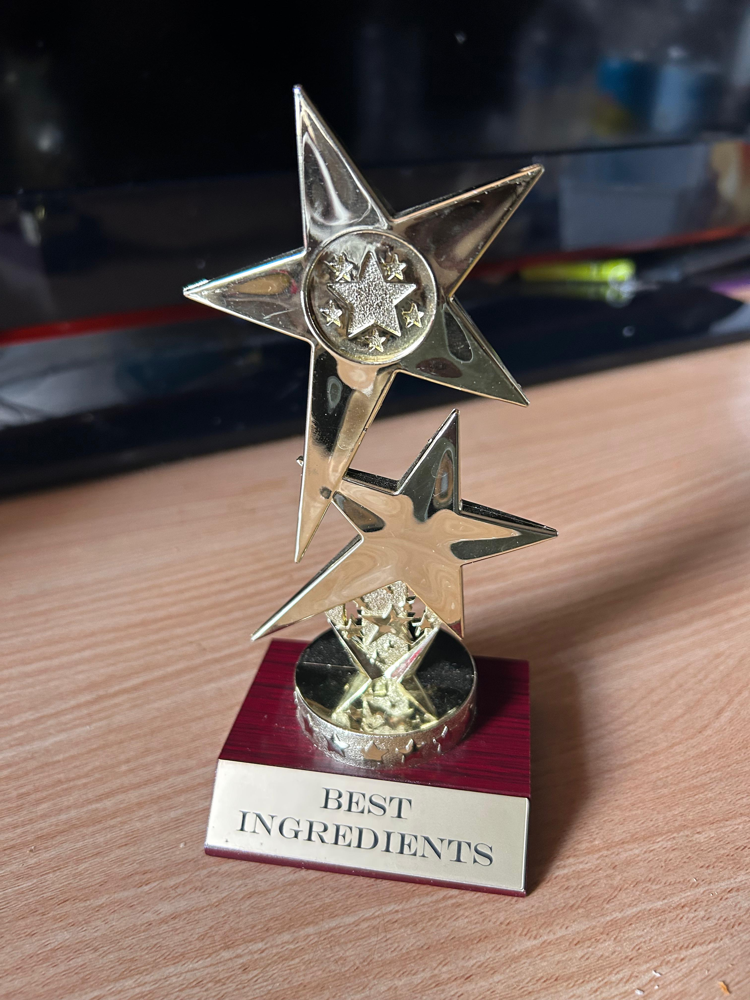
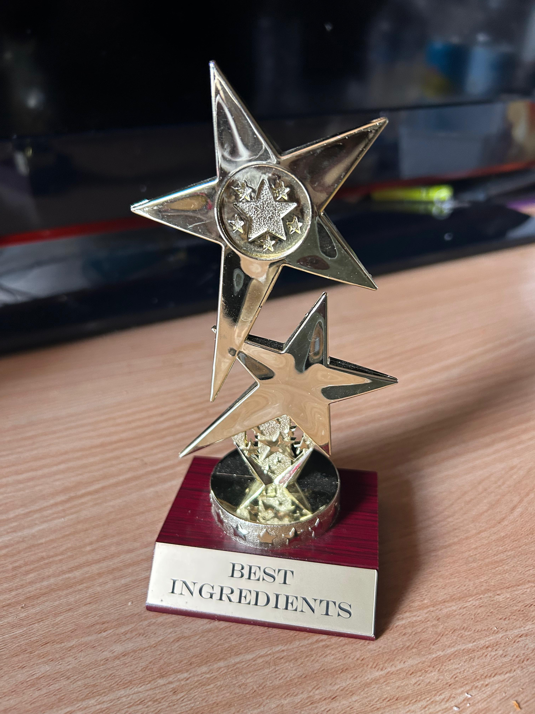

Emmanuel Iko-Ojo Simon
PhD Researcher in Algorithm Debt | Software Engineering | AI Systems

PhD Researcher in Algorithm Debt | Software Engineering | AI Systems
I am a Software Engineering and Artificial Intelligence researcher, and I earned my PhD from the Australian National University (ANU) in 2026. My research focuses on the sustainability and long-term maintenance of machine learning–enabled systems, with particular emphasis on understanding, characterising, and detecting technical Debt in machine and deep learning systems. My broader research interests include AI engineering, empirical software engineering, and the application of trustworthy and maintainable AI techniques in health-related systems, where reliability and accountability are critical. Alongside my research, I actively contribute to the academic community as a reviewer for leading software engineering conferences and journals including ICSE, ASE, and EMSE. I am passionate about advancing responsible and human-centred AI and supporting research that delivers meaningful impact for both developers and society.
Exploring the causes and impact of Algorithm Debt in machine learning systems.
Simon, E. I. O. (2025). Characterising Algorithm Debt in Machine and Deep Learning Systems. Proceedings of the IEEE/ACM 47th International Conference on Software Engineering (ICSE).
PDF | DOISimon, E. I. O., Hettiarachchi, C., Potanin, A., Suominen, H., & Fard, F. (2024). Automated Detection of Algorithm Debt in Deep Learning Frameworks: An Empirical Study. Registered Report Track, IEEE International Conference on Software Engineering.
PDF | DOIVenkatkrishna, V., Nagabushanam, D. S., Simon, E. I. O., & Vidoni, M. (2024). Multi-step Automated Generation of Parameter Docstrings in Python: An Exploratory Study. Proceedings of the IEEE/ACM 46th International Conference on Software Engineering.
PDF | DOIVenkatkrishna, V., Nagabushanam, D. S., Simon, E. I. O., & Vidoni, M. (2023). DocGen: Generating Detailed Parameter Docstrings in Python. arXiv preprint arXiv:2311.06453.
PDF | arXivSimon, E. I., Vidoni, M., & Fard, F. H. (2023). Algorithm Debt: Challenges and Future Path. IEEE/ACM 2nd International Conference on AI Engineering – Software Engineering.
PDF | DOIAngyu, J. T., Simon, E. I., & Emedolu, B. (2022). Securing IoT from DDoS Attacks: Blockchain a Possible Solution. Journal of Information and Computational Science.
Alams, M. T., Thomas, G., Simon, E. I., Tohomdet, L. K., Mallo Jr., S., & Bisandu, D. B. (2022). Open-Source Voice Over Internet Protocol (VOIP) for Small and Medium Enterprises in and Post COVID-19 Era. Researchjournali’s Journal of Communications Networks.
Simon, E. I., Abraham, D. C., & Gurumdimma, N. (2021). An Effective Deep Learning Model for COVID-19 Detection from Chest X-Ray. International Journal of Research and Innovation in Applied Science.
Sule, D., Thomas, G. A., Jegede, A. J., & Simon, E. I. (2021). Towards the Design and Implementation of a Legislature–Electoral Base Information Circulation System. Researchjournali’s Journal of Computer Science.
Obianuju, E. B., Bisandu, D. B., & Simon, E. I. (2020). Automated Real-Time LED Display Board for the University of Jos, Nigeria. International Journal of Latest Research in Science and Technology.
Bisandu, D. B., Datiri, D. D., Ikoojo, S. E., Onokpasa, E., Mammuam, A. T., et al. (2019). A Framework for the Adoption of Knowledge Management Systems in University of Jos, Nigeria. International Journal of Innovation and Learning.
Eva, O., Bala, D. B., & Simon, E. I. (2019). Sudoku Solving Ability and Intelligence. International Journal of Computer Applications.
Iko-Ojo Simon et al. (2018). A Survey of Algorithm Debt in Machine and Deep Learning Systems: Definition, Smells, and Future Work. 2018.
Exploring the causes and impact of Algorithm Debt in machine learning systems.
How hyperparameter tuning affects model performance and technical debt.
 



Email: emmanuel.simon@anu.edu.au
GitHub: github.com/ikoojos